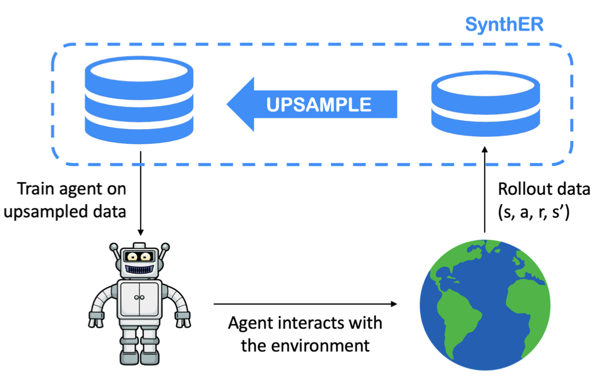
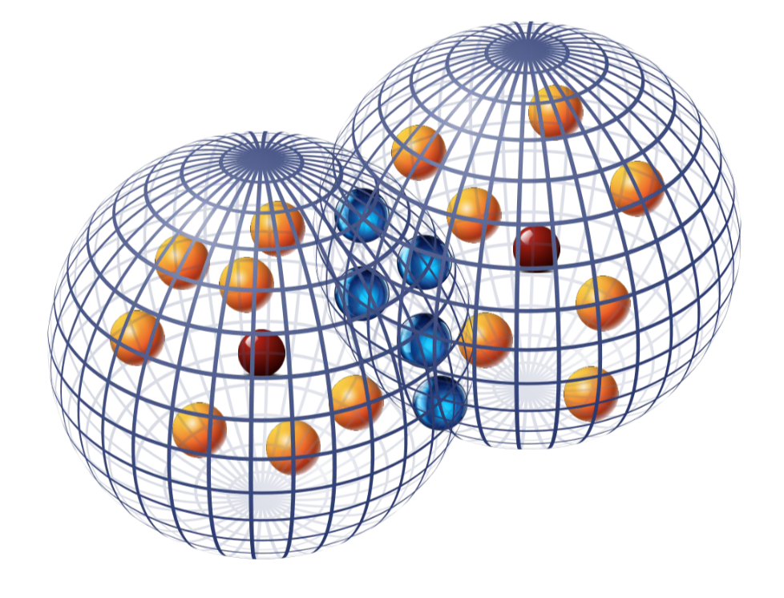

Carl Richardson carlrichardson100@gmail.com | |
About
I am a postdoctoral researcher in the Control Group at the University of Oxford, working with Antonis Papachristodoulou. My research focuses on the application of nonlinear systems theory and semidefinite programming to problems in machine learning and control. In particular, I am interested in how such theory can be harnessed to analyse the performance, robustness, and efficiency of these systems and inform better design. For an up to date list of my recent work, please refer to my Google Scholar profile.
Before joining Oxford, I was a PhD student at the University of Southampton where I was part of the MINDS CDT, advised by Matthew Turner. I also completed an internship at PNNL, with Ján Drgoňa and Ethan King in the Data Science and Machine Intelligence Group, and a studentship at the Alan Turing Institute in London.
News
Papers
|

|
|

|
Provably Robust Blackbox Optimization for Reinforcement Learning
Krzysztof Choromanski*, Aldo Pacchiano*, Jack Parker-Holder*, Yunhao Tang, Deepali Jain, Yuxiang Yang, Atil Iscen, Jasmine Hsu, Vikas Sindhwani
The Conference on Robot Learning (CoRL), 2019 (Spotlight)
(ArXiv)
|
Employment

|
Facebook AI Research - Intern, FAIR Labs - (2021)
|

|
Aspect Capital - Intern, Machine Learning Research - (2020)
|

|
JPMorgan Chase - Vice President, Quantitative Research - (2012-2019)
|